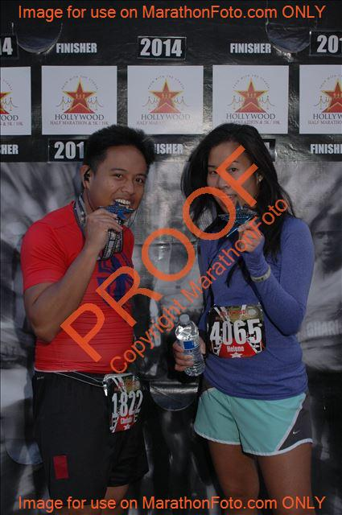
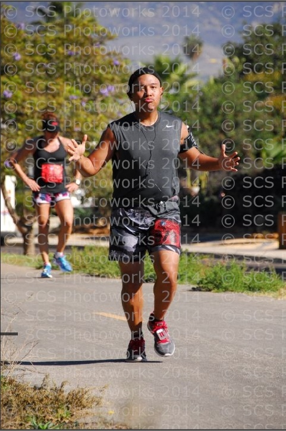
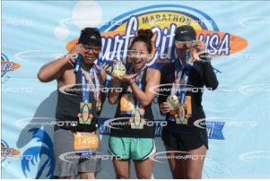
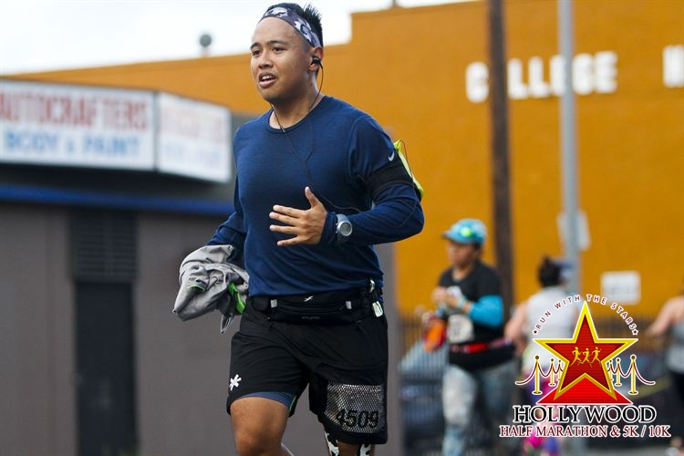
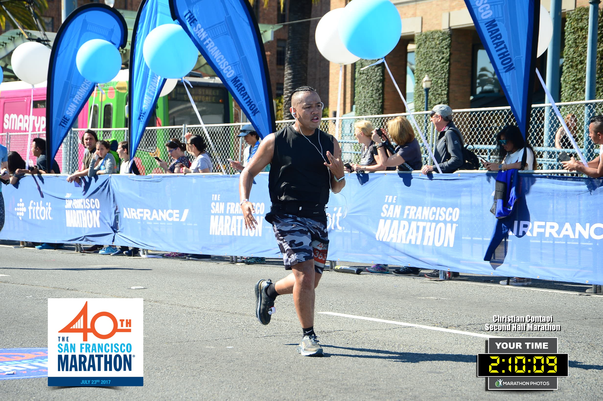

Spotify player, nice to have but placeholder here.

| Race: |
Rank: |
Time: |
Pace: |
| Malibu International Marathon (Half) |
573 of 2345 |
2.05.29 |
9.34 a mile |

| ASICS LOS ANGELES MARATHON 2014 |
4:48:42 |
| Pace: 11.02 a mile / Rank: 7224 out of 21505 |

| HOLLYWOOD HALF MARATHON 2014 |
1:57:01 |
| Pace: 8.57 a mile || Rank: 1168 out of 5753 |

| SANTA BARBARA VETERANS DAY MARATHON 2014 |
4:56:38 |
| Pace: 11.19 a mile || Rank: 564 out of 870 |
More photos here.

| KICK OFF THE NEW YEAR HALF MARATHON 2015 |
2:05:00 |
| Pace: 9.40 (est) a mile || Rank: 6 out of 20 |

| ASICS LOS ANGELES MARATHON 2015 |
4:16:08 |
| Pace: 09.50 a mile || Rank: 2710(men) |

| ORANGE COUNTY MARATHON 2015 (HALF) |
1:46:31 |
| Pace: 8.08 a mile || Rank: 598 out of 9169 |

| THE SAN FRANCISCO MARATHON 2015 |
4:19:22 |
| Pace: 09.54 a mile || Rank: 2327 out of 6071 |

| JETBLUE LONG BEACH MARATHON 2015 |
4:59:55 |
| Pace: 11.26 a mile || Rank: 1071 out of 2766 |

| CALIFORNIA INTERNATIONAL MARATHON 2015 |
4:10:11 |
| Pace: 09.40 a mile || Rank: 2744 out of 5628 |

| SURF CITY USA MARATHON 2016 |
4:31:05 |
| Pace: 11.02 a mile / Rank: 863 overall |
Surf City Marathon
Huntington Beach, CA; February 7, 2016
The last of the Beach City series. Marathon felt too loopy. The race is also the start of the decline of my body from doing so many in the previous year.
More photos.

| HOLLYWOOD HALF MARATHON 2016 |
2:08:18 |
| Pace: 09.51 a mile / Rank: 1304 |

| PASADENA HALF MARATHON 2017 |
2:05:20 |
| Pace: 09.58 a mile / Rank: 992 out of 3538 |

| SKETCHERS PERFORMANCE LA MARATHON 2017 |
4:35:20 |
| Pace: 11.02 a mile / Rank: 3803 (Men) |

| THE SAN FRANCISCO MARATHON (2ND HALF) |
2:10:09 |
| Pace: 10.12 a mile / Rank: 1840 out of 4663 |